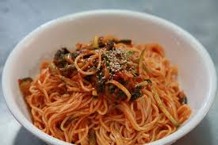

Spicy Garlic Butter Noodles
A quick, fiery, buttery dish ready in under 20 minutes.
 provided by Picryl
Prep Time:5 min | Cook Time:10 min | Total:15 min
Servings:2
Ingredients:
- 200g(about 2 cups) noodles(spaghetti, ramen, or egg noodles)
- 3 tbsp unsalted butter
- 4-5 cloves garlic, finely minced
- 1-2 tbsp red chilli flakes(adjust to taste)
- 1 tbsp soy sauce
- 1 tsp vinegar or lemon juice
- Salt, to taste
- Optional: 1 tsp sugar (balances spice)
- Optional:chopped spring onions, sesame seeds, fried garlic
Instructions:
- Cook the noodles according to the package. Drain and set aside.
- In a pan, melt butter on medium heat.
- Add minced garlic and saute for 30-60 seconds until fragrant(don't burn it).
- Add chilli flakes, soy sauce, vinegar, and a pinch of salt. Stir for 30 seconds.
- Toss in the noodles and mix well until coated in the spicy butter sauce
- Taste and adjust seasoning. Add sugar if the spice is too sharp.
- Serve hot, garnished with spring onions, sesame seeds, or crispy garlic.
Variations:
- Add stir-fried veggies or a fried egg for a more filling dish.
- For a korean-style twist, swap chilli flakes with gochujang.
- Like it creamy? Stir in a splash of cream or cheese at the end.
You Might Also Like: